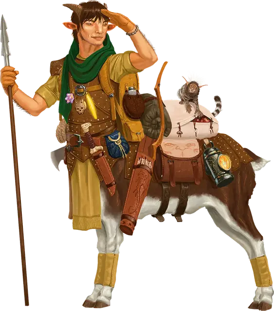

Бариаур-странник
Bariaur Wanderer
Средний Небожитель, хаотично-добрый

Класс Доспеха 14 (проклёпанный доспех)
Хиты 71 (11к8 + 22)
Скорость 40 футов
| мод | спас | ||
|---|---|---|---|
| СИЛ | 18 | +4 | +6 |
| ЛОВ | 14 | +2 | +4 |
| ТЕЛ | 15 | +2 | +2 |
| мод | спас | ||
|---|---|---|---|
| ИНТ | 11 | +0 | +0 |
| МДР | 15 | +2 | +2 |
| ХАР | 10 | +0 | +0 |
Навыки Атлетика +6, Восприятие +4, Выживание +6
Чувства тёмное зрение 60 футов, пассивное Восприятие 14
Языки Общий, Небесный
Опасность 3 (700 опыта)
Бонус мастерства +2
Особенности
Ощущение портала. Бариаур может ощущать присутствие порталов в пределах 30 футов, включая неактивные порталы, и инстинктивно знает место назначения каждого из них. Бариаур знает расстояние и направление к последнему порталу, которым он пользовался, пока они находятся на одном и том же плане.
Действия
Мультиатака. Бариаур совершает две атаки Зазубренным копьём или Коротким луком.
Зазубренное копьё. . Рукопашная или дальнобойная атака оружием: +6 к попаданию, досягаемость 5 фт. или дистанция 30/120 футов, одна цель. Попадание: 9 (1к10 + 4) колющего урона. Если целью является существо, его скорость уменьшается на 10 футов до начала следующего хода бариаура.
Таран. . Рукопашная атака оружием: +6 к попаданию, досягаемость 5 футов, одна цель. Попадание: 8 (1к8 + 4) дробящего урона. Если перед атакой бариаур переместится как минимум на 20 футов по прямой к цели, то цель дополнительно получает 10 (3к6) дробящего урона и должна преуспеть в спасброске Силы Сл 14, иначе упадёт ничком.
Короткий лук. . Дальнобойная атака оружием: +4 к попаданию, дистанция 80/320 футов, одно существо. Попадание: 5 (1к6 + 3) колющего урона плюс 4 (1к8) колющего урона, если хиты существа ниже его максимума.
Использование заклинания. Бариаур накладывает одно из следующих заклинаний, используя Мудрость в качестве базовой характеристики:
• Неограниченно: пляшущие огоньки [dancing lights], искусство друидов [druidcraft];
• 1/день каждое: чудо-ягоды [goodberry], бесследное передвижение [pass without trace], языки [tongues].
Бонусные действия
Сильный прыжок. Бариавр прыгает на расстояние, равное его скорости ходьбы.
Описание
Родом из Асгарда, бариауры- кентавроподобные Небожители, с нижней частью тела козла, гуманоидными торсами и изогнутыми рогами. Некоторые бариауры утоляют свою жажду странствий, исследуя свой родной мир, Внешние земли и Великое Колесо за его пределами. Эти бариауры-странники часто служат проводниками во Внешних землях, помогая путешественникам, охотно рассказывая о достопримечательностях Города-дверей и другие интересные места. На протяжении своих путешествий эти выносливые странники впитывают окружающие их планарные энергии, приспосабливаясь к обширным и разнообразным ландшафтам Внешних земель и часто принимая аспекты этих планов.